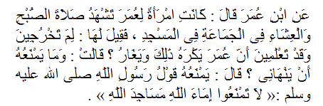
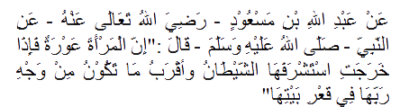
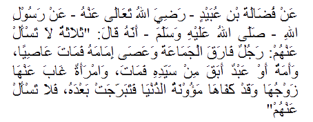

Hadist
Back-
Anjuran Penampilan Muslimah
-
Adab Keluar Rumah
-
Larangan Bagi Wanita
- Adanya pintu khusus wanita di masjid
- Wanita tidak berhak lewat di tengah jalan
- Thawafnya kaum wanita tanpa bercampur baur dengan kaum lelaki
- Larangan bagi kaum lelaki masuk menemui kaum wanita yang bukan mahramnya
Anjuran berpenampilan indah
Close
Dari Abdullah bin Mas'ud dari Nabi shallahu 'alaihi wa sallam, Beliau bersabda, "Tidak masuk surga orang yang dalam hatinya terdapat kesombongan meskipun sebesar debu," lalu ada seorang yang berkata, "Sesungguhnya seseorang suka jika pakaiannya indah dan sandalnya bagus," maka Beliau bersabda, "Sesungguhnya Allah indah dan menyukai keindahan. Sombong adalah menolak kebenaran dan merendahkan manusia." (HR. Muslim)
Kewajiban Menutup Aurat
Close
Dari Abdullah bin Amr radhiyallahu 'anhu ia berkata: Aku mendengar Rasulullah shallallahu 'alaihi wa sallam bersabda, “Akan ada di akhir umatku kaum wanita yang berpakaian namun telanjang, di atas kepala mereka ada seperti punuk unta, laknatlah mereka, karena mereka wanita yang dilaknat.” (HR. Thabrani dalam Al Mu’jamush Shagir). (HR. Muslim)
Berdiamnya wanita di rumah lebih baik daripada keluar meskipun untuk ke masjid
Close
Dari Ibnu Umar radhiyallahu 'anhu ia berkata: Rasulullah shallallahu 'alaihi wa sallam bersabda, "Janganlah kalian melarang istri kalian pergi ke masjid, namun rumah mereka adalah lebih baik bagi mereka." (Shahih, diriwayatkan oleh Abu Dawud dan Ibnu Khuzaimah)
Memberikan izin kepada wanita keluar untuk suatu keperluan
Close
Dari Aisyah radhiyallahu 'anha, dari Nabi shallallahu 'alaihi wa sallam, Beliau bersabda, "Telah diizinkan kalian keluar untuk suatu keperluan." (Muttafaq 'alaih)
Wanita tidak boleh keluar rumah kecuali dengan izin suaminya. Jika tidak diizinkan, maka tidak boleh keluar
Close 
Dari Ibnu Umar ia berkata: Istri Umar menghadiri shalat Subuh dan Isya berjamaah di masjid, lalu ada yang berkata kepadanya (kepada istri Umar tersebut), "Mengapa kamu keluar, padahal kamu mengetahui bahwa Umar tidak suka yang demikian dan cemburu terhadapnya?" Istri Umar berkata, “Mengapa dia tidak melarangku?" lalu dijawab, "Yang menghalanginya adalah sabda Rasulullah shallallahu 'alaihi wa sallam: "Janganlah kalian melarang hamba-hamba Allah yang wanita pergi menuju masjid-masjid Allah." (HR. Bukhari)
Wanita tidak boleh keluar rumah kecuali dengan izin suaminya. Jika tidak diizinkan, maka tidak boleh keluar
Close 
Dari Abdullah bin Mas'ud radhiyallahu 'anhu, dari Nabi shallallahu 'alaihi wa sallam, Beliau bersabda, "Sesungguhnya wanita itu aurat. Apabila ia keluar, maka setan akan memperhatikannya, dan keadaan yang paling diridhai Tuhannya adalah di dalam rumahnya." (Shahih, diriwayatkan oleh Tirmidzi, Ibnu Khuzaimah dan Ibnu Hibban)
Larangan memakai wewangian dan sejenisnya ketika keluar ke masjid atau lainnya
Close
Dari Abu Musa Al Asy'ariy radhiyallahu 'anhu ia berkata: Rasulullah shallallahu 'alaihi wa sallam bersabda, "Apabila seorang wanita memakai wewangian, lalu melewati suatu kaum agar mereka mencium wanginya, maka ia adalah begini dan begitu", Beliau menyebutkan kata-kata yang keras. Dalam sebuah lafaz disebutkan, "Maka dia adalah seorang pezina." (Hasan shahih, diriwayatkan oleh Abu Dawud, Tirmidzi dan Nasa'i)
Larangan menampakkan kecantikannya ketika keluar
Close 
Dari Fudhalah bin Ubaid radhiyallahu 'anhu dari Rasulullah shallallahu 'alaihi wa sallam, bahwa Beliau Bersabda, "Ada tiga orang yang tidak perlu kamu tanya tentang mereka; seorang yang memisahkan diri dari jamaah dan mendurhakai imam(pemimpin)nya, ia pun meninggal dalam keadaan durhaka, seorang budak wanita atau laki-laki yang melarikan diri dari tuannya lalu meninggal, dan seorang wanita yang ditinggal sementara oleh suaminya padahal ia telah diberi kecukupan dalam kehidupannya, lalu ia bertabarruj setelahnya, janganlah kamu tanya tentang mereka." (Shahih, diriwayatkan oleh Ahmad, Bukhari dalam Al Adabul Mufrad dan Hakim)
Tabarruj adalah seorang wanita menampakkan keindahan dan kecantikannya kepada laki-laki.
Larangan bersafar tanpa ditemani mahram
Close
Dari Ibnu Abbas radhiyallahu 'anhuma ia berkata: Rasulullah shallallahu 'alaihi wa sallam bersabda, "Janganlah seorang wanita bepergian jauh kecuali bersama mahramnya."Lalu ada seorang yang berkata, “Wahai Rasulullah, sesungguhnya saya ingin ikut ke dalam pasukan ini dan itu, sedangkan istri saya ingin naik hajji,” maka Beliau bersabda, "Berangkat (hajilah) bersamanya." (Muttafaq 'alaih)
Adanya pintu khusus wanita di masjid
Close
Dari Nafi' dari Ibnu Umar radhiyallahu 'anhu ia berkata: Rasulullah shallallahu 'alaihi wa sallam bersabda, "(Alangkah baiknya) jika sekiranya kita tinggalkan pintu ini untuk wanita." Nafi' berkata, “Lantas Ibnu Umar tidak pernah masuk lewat pintu itu sampai wafatnya." (Hasan, diriwayatkan oleh Abu Dawud)
Wanita tidak berhak lewat di tengah jalan
Close
Dari Abu Usaid Al Anshariy bahwa ia mendengar Rasulullah shallallahu 'alaihi wa sallam bersabda ketika Beliau di luar masjid, di mana ketika itu kaum lelaki dan wanita bercampur baur di jalan, "Hendaklah kalian memperlambat berjalan, karena kalian tidak berhak melewati jalan tengah, kalian harus melewati pinggir jalan." ketika itu kaum wanita menempel ke dinding sehingga kainnya terkait dengan dinding akibat menempelnya." (Hasan, diriwayatkan oleh Abu Dawud)
Kata-kata "tidak berhak berhak melewati jalan tengah" adalah melewati tengah jalan.
Thawafnya kaum wanita tanpa bercampur baur dengan kaum lelaki
Close
Dari Ibnu Juraij ia berkata: Telah mengabarkan kepadaku 'Athaa' bahwa ketika Ibnu Hisyam melarang wanita thawaf dengan kaum lelaki, ia (Athaa') berkata, "Bagaimana ia bisa melarang, padahal para istri Nabi shallallahu 'alaihi wa sallam berthawaf dengan kaum lelaki?" Saya pun bertanya, "Apakah setelah turun ayat hijab atau sebelumnya?" Ia menjawab, "Sungguh, saya mendapatinya setelah turun ayat hijab." Saya bertanya, "Bagaimana mereka bisa bercampur baur dengan kaum lelaki?" Ia menjawab, "Bahkan mereka tidak bercampur dengan kaum lelaki; Aisyah radhiyallahu 'anha itu berthawaf menyendiri dari kaum lelaki, ia tidak bercampur dengan mereka." (HR. Bukhari)
Larangan bagi kaum lelaki masuk menemui kaum wanita yang bukan mahramnya
Close
Dari 'Uqbah bin 'Amir bahwa Rasulullah shallallahu 'alaihi wa sallam bersabda, "Jauhilah masuk ke tempat wanita,” lalu ada seorang Anshar berkata, “Wahai Rasulullah, bagaimana menurutmu saudara ipar?" Beliau menjawab, "Ipar adalah maut." (Muttafaq 'alaih)
Ipar adalah saudara suami, sedangkan maksud "maut" adalah bahwa kebinasaan akan terjadi ketika ipar berduaan bersama si wanita.